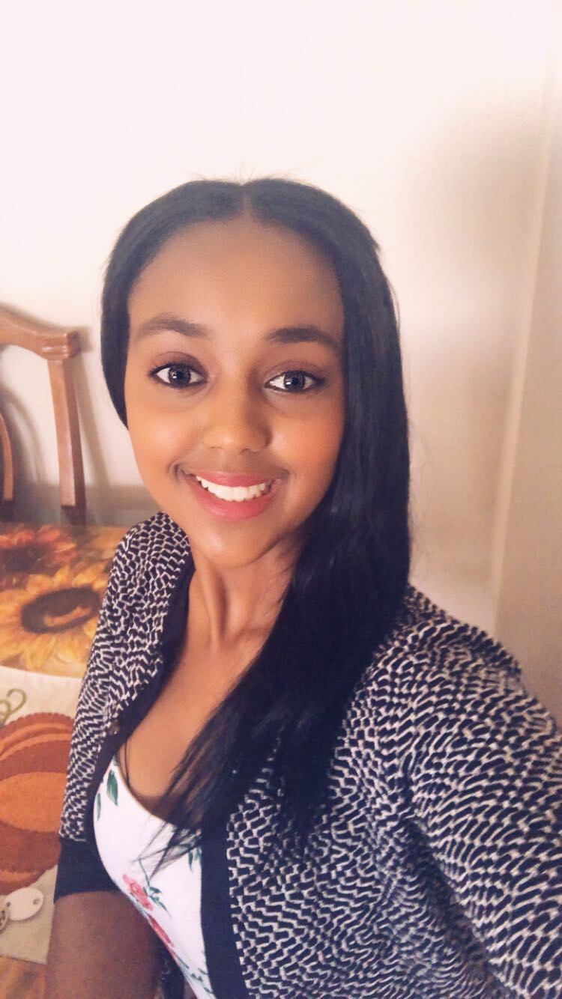

About Me
I was born in 1998,Addis Ababa(Ethiopia).Starting from the age of 5, I attended one of the well-known missionary school. I spent 13 years in the school. Growing up, I wanted to do something related to health at first because I have always felt passionate about helping people resolve their problems. I did have the opportunity to develop my skills in this field because my parents pushed me to become a doctor, thats the main reason why start my college as a bio- chemistry major, the more I spent time in that department the more I realised that its not something I want to do Every day. My curiousity about technlogy makes me realize that I want to be a developer. That makes me choose to join the developer world.
I like doing full stack because it makes me flexiable on the things i can do towards back end and front end.
Am a very freindly, spirited and team oriented person. As a hobby i like painting and desinging webage.I spend majority of my time trying to figure challanging things.The reason behind that is because i like keeping my self challanged.